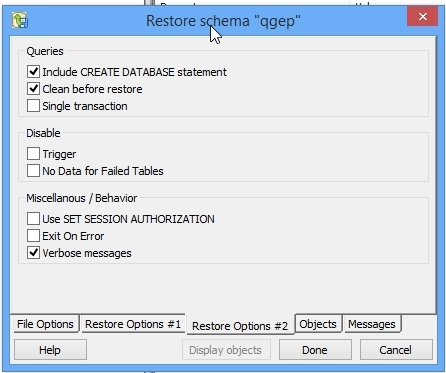

3. Database initialization¶
You can use pgAdmin to access and manage the database server.
Note
By clicking the link you can learn how to Install pgAdmin
3.1. Process¶
In pgAdminIII or pgAdmin4
- Connect to the database server
- Create a new group role (preferably named qgep, but you are free to choose)
- Create a new login role (qgepuser for example) and make it a member of the qgep group
You can do this graphically or by simply opening a pgAdminIII SQL query window and type the following:
CREATE GROUP qgep;
CREATE ROLE qgepuser LOGIN;
GRANT qgep TO qgepuser;
- Create a new database with UTF8 encoding (preferably named qgep, but you are free to choose)
- Change to this database
- Open an SQL query Window and create the extensions (if they’re not created yet)
CREATE EXTENSION hstore;CREATE EXTENSION postgis;
3.1.1. Restore demo datamodel¶
Restore the latest data model that also includes demo data:
Download demo data * https://github.com/QGEP/datamodel/releases/latest * download qgep_vx.y.z_structure_and_demo_data.backup
Back in pgAdmin, right click the qgep database
- Click Restore
- Load your download of qgep_vx.y.z_structure_and_demo_data.backup

- Restore Options #2: Activate Clean before restore
- Click Restore

- Check whether in Message window last line is Exit Code 0
“pg_restore: [archiver] unsupported version (1.13) in file header” or in German “pg_restore: [Archivierer] nicht unterstützte Version (1.13) im Dateikopf” try updating your PostgreSQL, see https://stackoverflow.com/questions/49064209/getting-archiver-unsupported-version-1-13-in-file-header-when-running-pg-r
- Click Cancel
Right click the database and click Refresh

There are 4 schemas (qgep_od, qgep_sys, qgep_vl, qgep_import)
Update privileges for the qgep_od, qgep_sys and qgep_vl schema
- Right click the qgep_od schema
- Properties -> Privileges Tab > Grant
USAGEto groupqgep. - Click Grant Wizard …
- Selection, click Check All
- Privileges
- Group qgep
- Choose ALL
- Right click the qgep_sys schema and the qgep_vl schema and repeat the steps described above for the qgep_od-schema
You can update the privileges easier as a query:
GRANT USAGE ON SCHEMA qgep_od TO GROUP qgep; GRANT USAGE ON SCHEMA qgep_sys TO GROUP qgep; GRANT USAGE ON SCHEMA qgep_vl TO GROUP qgep; GRANT ALL ON schema qgep_od TO postgres; GRANT ALL ON schema qgep_sys TO postgres; GRANT ALL ON schema qgep_vl TO postgres;
3.1.2. Empty data model¶
You also have the option to restore the latest empty data model (no demo data).
- Download the data model by going to https://github.com/QGEP/datamodel/releases/latest and by downloading the latest qgep_vx.y.z_structure_with_value_lists.sql.
- In order to restore you can follow the steps from Restore demo datamodel, using the template data model instead of the demo data one.
3.1.3. Generate the data model¶
You can also generate the data model under Linux.
Download the data model:
git clone https://github.com/QGEP/datamodel cd datamodel
Setup the
pg_service.conffile and add thepg_qgepservice as in the Linux pg_service section.Create the database:
psql -U postgres -c 'CREATE DATABASE qgep;'
Run the generation script:
./scripts/db_setup.sh
If you want to use a different SRID you need to use the -s option.
For instance, run ./scripts/db_setup.sh -s 2056 for the 2056 SRID.
If you already have a data model and you want to force the regeneration
of the model you can also use the -f option: ./scripts/db_setup.sh -f.
You can use the -r option to add roles (qgep_viewer, qgep_user, qgep_manager, qgep_sysadmin).
- Viewer: Can consult tables and views.
- User: Can edit data.
- Manager: Can edit data and value lists.
- Admin: Database administrator.